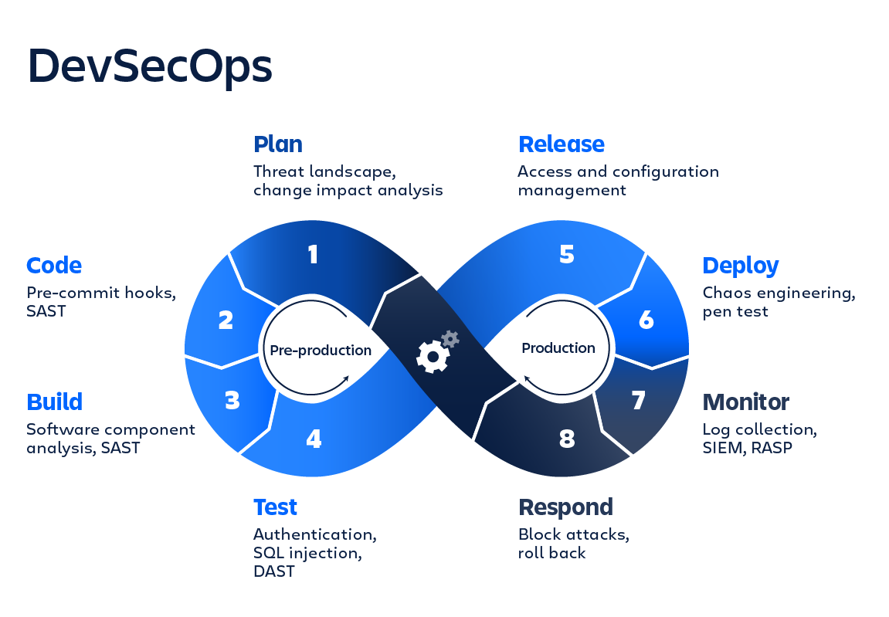
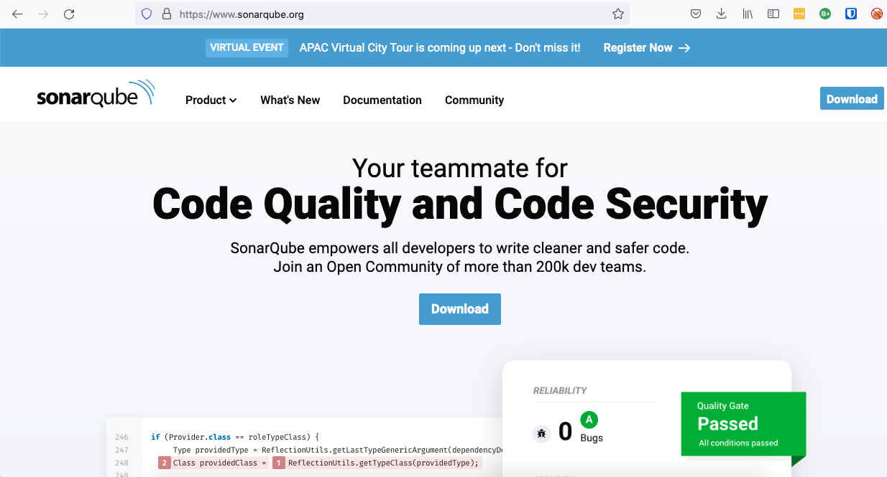
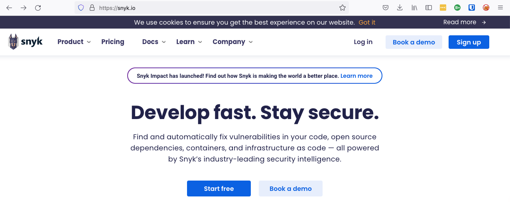
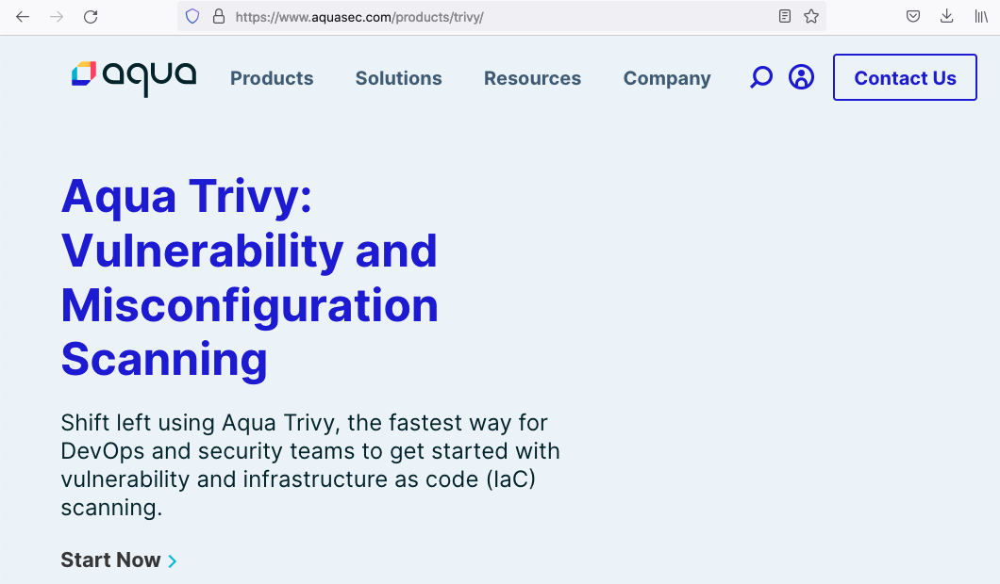

DevSecOps
Shift Left Security: Container vulnerability scanning
whoami
"Aryan of House Hackm3, The First of his name, The Unpatched, Hoarder of Rainbow Tables, Cracker of Firewalls, Protector of Networks, Servers and Containers, Khal of Nothing, Domesticator of Trolls, Breaker of Chairs"
whoami 2.0
-
previously a Network Engineer at Capitol University
-
currently DevOps Systems Administrator at Innovuze Solutions Inc.
-
perpetual n00b and tinkerer of technology
-
FOSS advocate
-
... obviously a Game of Thrones fan.
-
... an audio bookworm (HP, GoT, LoTr, WoT)
Scope of this presentation
-
DevOps and Principles
-
Challenges in transitioning to a DevOps-centered organization
-
Benefits adopting fully DevOps processes
-
DevSecOps: Shift Left Paradigm
-
Demonstration of Trivy and CI/CD via GitHub Actions
-
Other tools for the DevSecOps Pipeline
-
QA and roundtable discussion

What is DevOps?
is the combination of cultural philosophies, practices, and tools that increases an organization’s ability to deliver applications and services at high velocity: evolving and improving products at a faster pace than organizations using traditional software development and infrastructure management processes.
DevOps Principles
for the open-minded-
Holistic thinking: see the whole system and NOT "my little bit"
-
Iterative and Incremental: complete agility across the board
-
Automated, Repeatable and Predictable: this is a no-brainer
-
Collaborative: break the silos across all the teams
-
Continuous: Delivery, Monitoring, Testing, Planning, Feedback
Scope of Development and Operations

Challenges of organizations in adopting a DevOps culture
WARNING: potentially triggering content ahead
Tools Challenges
- Multiple tools with overlapping features increasing the learning curve
- Limited knowledge of tools posing challenge in automation
Collaboration Challenges
- Developers are not fully synchronized
- Lack of team involvement in the development process
Process Challenges
- No defined process framework detailing the different tenets in DevOps
- Unstructured approach to automation
- No central process control in the application stack and environment management
- Unstructured approach to automation
Cultural Challenges
- Lack of Transformational Leadership
- Realtime visibility of the entire lifecycle across the board
- Lack of standardization on metrics, processes, practices and organization-level control
Benefits of DevOps for the open-minded...
-
Speed
-
Rapid Delivery
-
Reliability
-
Scale
-
Improved Collaboration
-
Security
DevSecOps: Shifting Left
https://www.aquasec.com/cloud-native-academy/devsecops/shift-left-devops/
The term “shift left” refers to the efforts of a DevOps team to guarantee application security at the earliest stages in the development lifecycle, as part of an organizational workflow
DevSecOps Loop
Shift Left Testing
Traditionally, application testing and security was implemented during the last phases of development, before being sent to security teams. If an application did not meet quality standards, did not function properly, or otherwise failed to meet requirements, it would be sent back into development for additional changes. This caused significant bottlenecks in the SDLC and was not conducive to DevOps methodologies
Shift left testing makes it possible to identify and fix defects much earlier in the software development lifecycle. This streamlines the development cycle, dramatically improves quality, and enables faster progression to later stages for security analysis and deployment.
Shift Left Security
To shift security left means to implement security measures during the entire development lifecycle, rather than at the end of the cycle. The goal of shifting security left is to design software with security best practices built in, and to detect and fix potential security issues and vulnerabilities as early in the development process as possible, making it easier, faster, and more affordable to address security issues.
DevSecOps Tools
Static Code Analysis
Container Vulnerability Scanner
Vulnerability and Misconfiguration Scanner
Demonstration